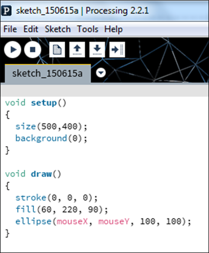
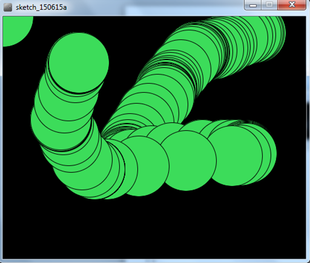
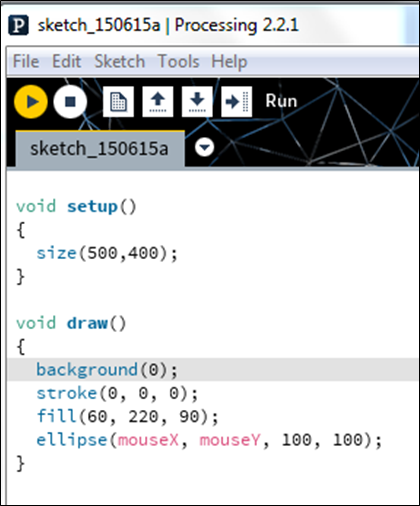
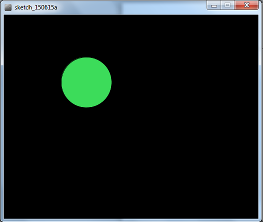

On completion of this lab you should:
Open the Processing Development Environment (PDE).
Enter the following code:

Using the File, Save as... menu options, save this sketchbook as lab02_step01.
Run the code. You should have an animation similar to the screen shot below.

We are now going to change the code (from the previous step) so that only one circle is shown when you move the mouse.
Amend your code so that the background function is in the draw method instead of the setup method:


ellipse(mouseY, mouseX, 100, 100) ellipse(width, mouseY, 100, 100)The exercises are typically based on the material we covered in the previous steps in this lab.
For each exercise listed below, open a new sketchbook.
For the challenge exercises you may need to visit the Processing website for additional information.
The solutions for this lab can be found here.
The file is in Zip format, so when you download it, you will need to unzip it. If you don't have unzipping software installed on your computer, 7Zip is a good choice.